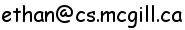

Office :
Room 305, McConnell Engineering Bldg
School of Computer Science
McGill University
3480 University Street
McConnell Engineering Building
Montreal, Quebec, Canada
H3A 2A7
Note: Replace the room number to Room 318 for mailing address
|
|
Email:  Office : Room 305, McConnell Engineering Bldg School of Computer Science McGill University 3480 University Street McConnell Engineering Building Montreal, Quebec, Canada H3A 2A7 Note: Replace the room number to Room 318 for mailing address |
I am at McGill University,
studying discrete math under the supervision of Professor
Sue Whitesides.
I'm interested in problems from theoretical CS, especially
graph drawing and computational geometry.
[CV]: Curriculum Vitæ
(updated November 1st, 2007)
[Algorithms Seminar] :
Algorithms Seminar series
[Algorithmic Problem Session]:
Problem solving group
[CGM lab] :
Computational Geometry Lab
[DMO Seminar] :
Discrete Mathematics and Optimization Seminar series
Fall 2007
COMP566: Discrete Optimization
[link]
COMP598: Readings of Innovative Ideas in System and Networking
[link]
Previous years spent at McGill
COMP506: Advanced Analysis Of Algorithms
[link]
COMP531: Theory of Computation
[link]
COMP680: Mining Biological Sequences
[link]
COMP507: Computational Geometry
[link]
[project]
COMP648: Algorithmic Motion Planning
[link]
MATH552: Combinatorial Optimization
[link]
COMP601: Special Topics in Computer Science
COMP765: Planning Algorithms
[
link to Prof. Pineau's page]
Previous years(Winter 2006, Fall 2007)
COMP251: Data Structures and Algorithms
[link to
Prof. Hayden's page]
[link to my TA page]
See my CV above.